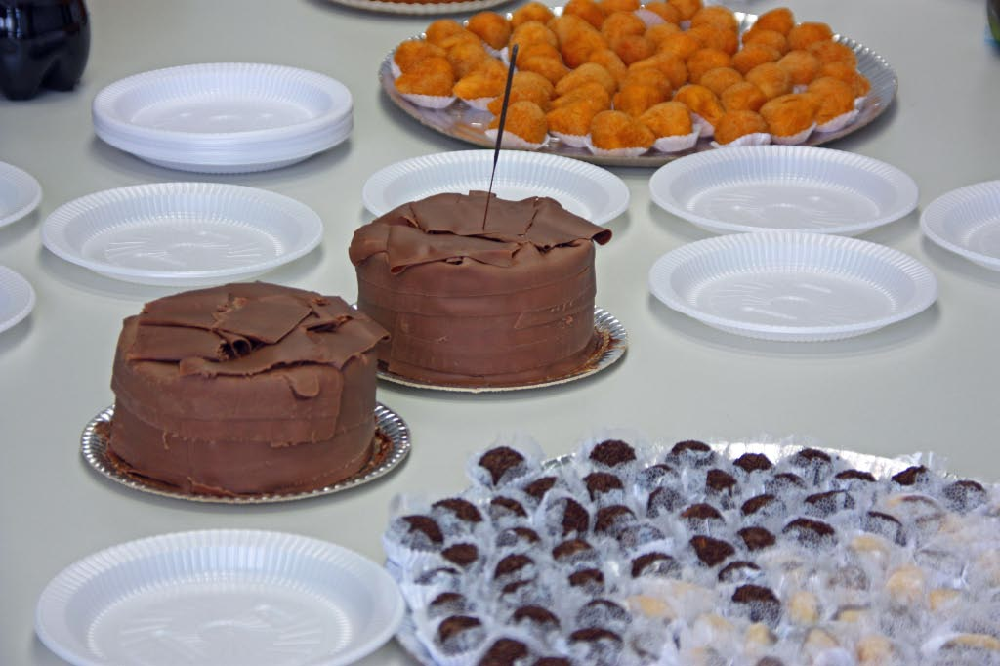

7 Estruturas de Dados em Python - Listas, Dicionários e Tuplas
De um bolo para uma festa: quando uma variável não é suficiente!
7.1 O que você saberá se ler todo este capítulo?
Prepare-se para descobrir um mundo onde uma variável pode guardar muito mais do que você imagina!
7.1.1 Você vai aprender:
- Por que precisamos de estruturas de dados - Quando uma variável simples não é suficiente
- Listas - Como criar, manipular e percorrer listas (como uma sacola de supermercado)
- Tuplas - Estruturas imutáveis perfeitas para dados que não mudam
- Dicionários - Como organizar informações por chave e valor (como um dicionário de palavras)
- Operações essenciais - Adicionar, remover, modificar e acessar elementos
- Quando usar cada tipo - A diferença entre mutável e imutável
- Percorrer estruturas - Como usar loops para trabalhar com seus dados
- Conversões - Como transformar listas em tuplas e vice-versa
7.1.2 Conceitos que você vai dominar:
- Mutabilidade vs Imutabilidade - Por que algumas estruturas podem ser modificadas e outras não
- Indexação - Como acessar elementos específicos (lembre-se: começamos do 0!)
- Métodos essenciais -
append(),remove(),sort(),keys(),values(),items() - Fatiamento - Como pegar pedaços das suas estruturas de dados
- Estruturas aninhadas - Como combinar diferentes tipos de dados
💡 Dica importante: Este capítulo é fundamental! As estruturas de dados são a base para quase tudo em Python. Domine-as bem e você estará preparado para criar programas muito mais interessantes!
7.2 Sabe o que é melhor do que um bolo? Bolo + coxinha + brigadeiro + empadão + café…
Ah, as variáveis que estudamos até agora… Elas eram bem comportadinhas, não é? Cada uma guardava apenas um valor: um número inteiro aqui, um texto ali, um booleano acolá. Era como ter uma festa onde cada convidado trouxe apenas um prato - um bolo de chocolate, outro de baunilha, outro de cenoura…
Mas e se quiséssemos fazer uma festa completa? 🎊
Imagine que você é aquela pessoa que vai numa festinha de aniversário e resolve montar o pratinho mais épico da história: 3 coxinhas, uma fatia de bolo, umas empadinhas, 5 beijinhos e, se sobrar espaço nesta obra arquitetônica brasileira efêmera, um cajuzinho.
E se pudéssemos fazer isso nos nossos programas?
É exatamente para isso que existem as estruturas de dados! Elas são como pratinhos de festa que podem guardar várias informações diferentes em uma única variável. Em vez de criar estudante1, estudante2, estudante3… você cria uma única variável que guarda todos os estudantes de uma vez!

🎯 O que vamos descobrir: Como transformar uma variável simples em uma verdadeira “sacola mágica” que pode guardar quantos dados você quiser!
7.3 Diferenças e semelhanças: Listas, Dicionários e Tuplas
Até agora, você trabalhou com variáveis bem simples, não é? Cada uma guardava apenas um valor:
Cada variável = um dado. Simples assim!
Mas e quando precisamos guardar várias informações? É aí que entram as estruturas de dados! 🎯
7.3.1 Analogia do Circo
Imagine que você está organizando um circo e precisa controlar:
- Lista: Os artistas que vão se apresentar (em ordem)
- Tupla: As informações do circo que nunca mudam (nome, endereço, capacidade)
- Dicionário: Os dados de cada artista (nome, idade, especialidade, cachê)
Cada estrutura tem seu propósito específico! Vamos descobrir quando usar cada uma.
7.3.2 Listas - A Sacola de Supermercado
Imagine que você precisa criar um sistema para gerenciar os estudantes de uma turma. Você poderia fazer assim:
Mas isso seria um pesadelo! 😱
- E se a turma tiver 46 alunos? Você criaria até
estudante46? - E se mudar para uma turma com 9 alunos? Ter que apagar tudo?
- E como ordenar alfabeticamente? Comparar
estudante1comestudante2… que bagunça!
7.3.2.1 Analogia da Sacola de Supermercado
As listas são como sacolas de supermercado! Você coloca vários itens dentro de uma única sacola:
- Sacola = Lista
- Itens = Elementos da lista
- Ordem = Os itens ficam na ordem que você colocou
7.3.2.2 Características das Listas:
- Mutáveis: Você pode adicionar, remover e modificar elementos
- Ordenadas: Os elementos ficam na ordem que você colocou
- Indexadas: Cada elemento tem uma posição (começando do 0!)
- Flexíveis: Podem conter qualquer tipo de dados
💡 Dica importante: Em Python, as listas são definidas com colchetes
[]e os elementos são separados por vírgulas. Simples assim!
7.3.2.3 Criando Listas
A sintaxe é bem simples! Use colchetes [] e separe os elementos com vírgulas:
7.3.2.4 Listas Vazias - Começando do Zero
Às vezes você quer criar uma lista vazia e ir adicionando elementos conforme necessário:
Resultado:
Lista inicial: []
Lista após adicionar: [10, 20, 30]🔓 As listas são MUTÁVEIS! Isso significa que você pode: - ✅ Adicionar elementos - ✅ Remover elementos
- ✅ Modificar elementos - ✅ Reorganizar elementosÉ como uma sacola de supermercado onde você pode mexer à vontade!
7.3.2.5 Operações com Listas
Agora vamos aprender as operações essenciais para trabalhar com listas! São como as ferramentas da sua caixa de ferramentas de programação.
7.3.2.5.1 Percorrendo Listas (Iteração)
Uma das operações mais importantes é percorrer uma lista, ou seja, “visitar” cada elemento:
Resultado:
🍎 Lista de frutas:
- maçã
- banana
- laranja
- uvaComo funciona:
- O
forpercorre cada elemento da lista - A variável
frutaassume o valor de cada elemento - A cada iteração, executamos o código dentro do loop
💡 Dica: Percorrer listas com
foré uma das operações mais comuns em Python!
7.3.2.5.2 Adicionando Elementos
Para adicionar elementos a uma lista, usamos o método append():
Resultado:
Lista original: [1, 2, 3, 4]
Após append(5): [1, 2, 3, 4, 5]
Após append(6): [1, 2, 3, 4, 5, 6]Como funciona:
append()adiciona o elemento no final da lista- A lista cresce automaticamente
- Importante: Não faça
lista = lista.append(item)- isso está errado!
🔍 Detalhe técnico: O
append()modifica a lista original. Não precisamos fazerlista = lista.append(item)porque a lista já é atualizada automaticamente.
7.3.2.5.3 Removendo Elementos
Para remover elementos de uma lista, usamos o método remove():
Resultado:
Lista original: ['Brasil', 'EUA', 'Japão', 'Alemanha']
Após remover 'Japão': ['Brasil', 'EUA', 'Alemanha']Como funciona:
remove()remove o primeiro elemento que encontrar com o valor especificado- Se o elemento não existir, Python dará erro
- A lista diminui automaticamente
⚠️ Cuidado: Se você tentar remover um elemento que não existe, Python dará um erro!
7.3.2.5.4 Ordenando Listas
Para ordenar uma lista, usamos o método sort():
Resultado:
Lista original: [3, 1, 4, 2, 5]
Ordenada crescente: [1, 2, 3, 4, 5]
Ordenada decrescente: [5, 4, 3, 2, 1]Como funciona:
sort()ordena a lista in-place (modifica a lista original)- Por padrão, ordena em ordem crescente
reverse=Trueinverte a ordem (decrescente)
💡 Dica:
sort()também funciona com strings (ordem alfabética)!
7.3.2.5.5 Acessando Elementos Específicos
Às vezes você quer acessar apenas um elemento específico da lista, não todos:
Resultado:
Primeira fruta: maçã
Segunda fruta: banana
Terceira fruta: laranja
Última fruta: uvaComo funciona:
- Usamos colchetes
[]com o índice do elemento - Lembre-se: Em Python, começamos a contar do 0!
frutas[0]= primeiro elementofrutas[1]= segundo elemento- E assim por diante…
🔢 Índices em Python:
- Índice 0 = Primeiro elemento
- Índice 1 = Segundo elemento
- Índice 2 = Terceiro elemento
- E assim por diante…
7.3.2.5.6 Modificando Elementos
Para modificar um elemento específico da lista, usamos o índice:
Resultado:
Lista original: [1, 2, 3, 4, 5]
Após modificar índice 2: [1, 2, 10, 4, 5]
Após modificar índice 0: [100, 2, 10, 4, 5]Como funciona:
- Usamos
lista[índice] = novo_valor - O elemento na posição especificada é substituído
- A lista é modificada in-place
💡 Dica: Você pode modificar qualquer elemento que tenha um índice válido!
7.3.3 Tuplas - O Ingresso de Cinema
As tuplas são como listas, mas com uma diferença fundamental: elas são IMUTÁVEIS!
7.3.3.1 Analogia do Ingresso de Cinema
Imagine que você comprou um ingresso de cinema. No bilhete está escrito:
- Filme: “Vingadores”
- Horário: “20:30”
- Sala: “5”
Essas informações não podem ser alteradas depois que o ingresso foi impresso. É exatamente assim com as tuplas!
7.3.3.2 Diferença Principal: Mutável vs Imutável
| Listas | Tuplas |
|---|---|
| ✅ Mutáveis - podem ser alteradas | 🔒 Imutáveis - não podem ser alteradas |
Uso: [] (colchetes) |
Uso: () (parênteses) |
| Podem crescer/diminuir | Tamanho fixo |
| Flexíveis | Seguras |
7.3.3.3 Exemplos de Tuplas
7.3.3.4 Quando Usar Tuplas?
- Coordenadas (latitude, longitude)
- Datas (dia, mês, ano)
- Configurações que não mudam
- Dados que devem ser protegidos contra modificação acidental
💡 Dica: Use tuplas quando você tem dados que nunca devem ser alterados!
7.3.3.5 Criando Tuplas
Para criar uma tupla, use parênteses () e separe os elementos com vírgulas:
7.3.3.6 Tuplas Vazias
Sim, é possível criar tuplas vazias, mas são raramente úteis:
💡 Dica: Tuplas vazias são como ingressos em branco - tecnicamente existem, mas não servem para muito!
7.3.3.7 Operações com Tuplas
As tuplas têm operações similares às listas, mas lembre-se: elas são imutáveis!
7.3.3.7.1 Percorrendo Tuplas
Você pode percorrer tuplas da mesma forma que percorre listas:
Resultado:
🐾 Lista de animais:
- gato
- cachorro
- papagaio
- peixe7.3.3.7.2 Verificando se um Elemento Existe
Para verificar se um elemento está na tupla, use in:
Resultado:
🚗 O fusca está na lista!Como funciona:
inverifica se o elemento existe na tupla- Retorna
Truese encontrar,Falsese não encontrar - Funciona igual com listas!
7.3.3.7.3 Adicionando e Removendo Elementos
⚠️ ATENÇÃO: Tuplas são IMUTÁVEIS! Você não pode adicionar ou remover elementos diretamente.
Mas há uma solução: criar uma nova tupla!
7.3.3.8 Adicionando Elementos (Criando Nova Tupla)
Resultado:
Tupla original: (1, 2, 3)
Nova tupla: (1, 2, 3, 4)⚠️ Importante: A vírgula após o
4é essencial! Sem ela, Python não reconhece como tupla.
7.3.3.9 Removendo Elementos (Criando Nova Tupla)
Resultado:
Tupla original: (10, 20, 30, 40, 50)
Nova tupla: (10, 30, 50)💡 Dica: Em vez de modificar, você sempre cria uma nova tupla!
7.3.3.9.1 Ordenando Tuplas
⚠️ LEMBRE-SE: Tuplas são IMUTÁVEIS! Não podemos ordenar diretamente.
Solução: Criar uma nova tupla ordenada!
Resultado:
Tupla original: (5, 1, 3, 2, 4)
Tupla ordenada: (1, 2, 3, 4, 5)Como funciona:
sorted()ordena e retorna uma listatuple()converte a lista em tupla
7.3.3.10 Conversões: Lista ↔︎ Tupla
Resultado:
Lista: [1, 2, 3]
Tupla: (1, 2, 3)💡 Dica: Use
list()para converter tupla em lista etuple()para converter lista em tupla!
7.3.3.10.1 Acessando Elementos das Tuplas
Acesso a elementos funciona igual às listas! Vamos ver algumas técnicas:
7.3.3.11 Acesso por Índice
Resultado:
Primeiro elemento: a
Terceiro elemento: c
Último elemento: e7.3.3.12 Fatiamento (Slicing)
Para pegar uma “fatia” da tupla:
tupla = ('a', 'b', 'c', 'd', 'e')
# Pegando elementos do índice 1 ao 3
subtupla = tupla[1:4]
print(f"Fatia [1:4]: {subtupla}")
# Pegando os primeiros 3 elementos
primeiros = tupla[:3]
print(f"Primeiros 3: {primeiros}")
# Pegando os últimos 2 elementos
ultimos = tupla[-2:]
print(f"Últimos 2: {ultimos}")Resultado:
Fatia [1:4]: ('b', 'c', 'd')
Primeiros 3: ('a', 'b', 'c')
Últimos 2: ('d', 'e')7.3.3.13 Índices Negativos
💡 Dica: Índices negativos contam de trás para frente!
-1= último,-2= penúltimo, etc.
7.3.4 Dicionários - O Dicionário de Palavras
Os dicionários são como um dicionário de palavras! Você procura por uma chave (palavra) e encontra o valor (significado).
7.3.4.1 Problema: Sistema de Condomínio
Imagine que você precisa criar um sistema para um condomínio. Você poderia fazer assim:
🚨 PROBLEMA: Temos 4 apartamentos, mas 5 nomes! O Eduardo é de qual apartamento? E se alguém adicionar um nome a mais? Como saber se a ordem está correta?
7.3.4.2 Solução: Dicionários!
Os dicionários resolvem esse problema organizando as informações por chave e valor:
7.3.4.3 Como Funcionam os Dicionários?
- Chave: O que você procura (ex: número do apartamento)
- Valor: O que você encontra (ex: nome do morador)
- Único: Cada chave aparece apenas uma vez
- Flexível: Valores podem ser qualquer tipo de dado
7.3.4.4 Analogia do Dicionário de Palavras
| Dicionário de Palavras | Dicionário Python |
|---|---|
| Palavra (chave) | Chave |
| Significado (valor) | Valor |
| Procura “casa” → encontra “lugar onde moramos” | Procura 100 → encontra 'Ana' |
💡 Dica: Dicionários são perfeitos para associar informações relacionadas!
7.3.4.5 Criando Dicionários
A sintaxe é bem simples! Use chaves {} e separe chave e valor com dois pontos ::
7.3.4.6 Estrutura: Chave : Valor
- Chave: Sempre à esquerda dos dois pontos
- Valor: Sempre à direita dos dois pontos
- Separador: Vírgula entre cada par chave:valor
💡 Dica: A ordem das chaves não importa! Você pode organizar como quiser.
7.3.4.7 Dicionários Vazios
Para criar um dicionário vazio:
Ambas criam um dicionário vazio que pode ser preenchido depois!
7.3.4.8 Operações Essenciais com Dicionários
7.3.4.8.1 Percorrendo Dicionários
7.3.4.8.2 Adicionando Elementos
7.3.4.8.3 Acessando Elementos
7.3.4.8.4 Modificando Elementos
7.3.4.8.5 Removendo Elementos
7.4 Exercícios Práticos (respostas no final da página)
🚀 Hora de praticar! Aqui estão 25 exercícios organizados por dificuldade. Cada exercício tem solução completa com explicação linha por linha!
7.4.1 MUITO FÁCIL (Nível 1)
1. Lista de Números Crie uma lista com números de 1 a 5 e imprima cada número.
- Exemplo: Output →
1, 2, 3, 4, 5
2. Tupla de Frutas Crie uma tupla com 3 frutas e imprima cada uma.
- Exemplo: Output →
maçã, banana, laranja
3. Dicionário Simples Crie um dicionário com seu nome e idade, depois imprima.
- Exemplo: Input →
"João", 25| Output →Nome: João, Idade: 25
4. Adicionar à Lista Crie uma lista vazia e adicione 3 números usando append().
- Exemplo: Input →
10, 20, 30| Output →[10, 20, 30]
5. Acessar Elemento Crie uma lista com 5 cores e imprima apenas a terceira cor.
- Exemplo: Input →
["vermelho", "azul", "verde", "amarelo", "roxo"]| Output →A terceira cor é: verde
7.4.2 FÁCIL (Nível 2)
6. Números Pares Crie uma lista com números de 1 a 10 e imprima apenas os números pares.
- Exemplo: Input →
[1, 2, 3, 4, 5, 6, 7, 8, 9, 10]| Output →2, 4, 6, 8, 10
7. Remover da Lista Crie uma lista com frutas, remova “banana” e imprima a lista.
- Exemplo: Input →
["maçã", "banana", "laranja", "uva"]| Output →["maçã", "laranja", "uva"]
8. Adicionar à Lista Crie uma lista com números de 1 a 5, adicione o número 6 e imprima.
- Exemplo: Input →
[1, 2, 3, 4, 5]| Output →[1, 2, 3, 4, 5, 6]
9. Dicionário com Duas Pessoas Crie um dicionário com nome e profissão de duas pessoas e imprima.
- Exemplo: Input →
"João": "Engenheiro", "Maria": "Médica"| Output →João é Engenheiro, Maria é Médica
10. Verificar Elemento na Tupla Crie uma tupla com carros e verifique se “fusca” está na tupla.
- Exemplo: Input →
("fusca", "fiesta", "oggi", "uno")| Output →O fusca está na lista!
7.4.3 MÉDIO (Nível 3)
11. Ordenar Lista Crie uma lista com números desordenados, ordene e imprima.
- Exemplo: Input →
[5, 2, 8, 1, 9, 3]| Output →[1, 2, 3, 5, 8, 9]
12. Modificar Elemento da Lista Crie uma lista com 5 nomes, modifique o terceiro nome e imprima.
- Exemplo: Input →
["Ana", "João", "Maria", "Pedro", "Lucas"]| Output →["Ana", "João", "Roberta", "Pedro", "Lucas"]
13. Dicionário com Múltiplas Informações Crie um dicionário com informações de uma pessoa e imprima formatado.
- Exemplo: Input →
"João Silva", 30, "São Paulo", "Engenheiro"| Output →Nome: João Silva, Idade: 30, Cidade: São Paulo, Profissao: Engenheiro
14. Converter Lista em Tupla Crie uma lista, converta em tupla e imprima ambas.
- Exemplo: Input →
[1, 2, 3, 4, 5]| Output →Lista: [1, 2, 3, 4, 5], Tupla: (1, 2, 3, 4, 5)
15. Adicionar ao Dicionário Crie um dicionário vazio, adicione 3 informações e imprima.
- Exemplo: Input →
"Maria", 25, "Rio de Janeiro"| Output →nome: Maria, idade: 25, cidade: Rio de Janeiro
7.4.4 DIFÍCIL (Nível 4)
16. Lista de Dicionários Crie uma lista com 3 dicionários contendo informações de pessoas e imprima.
- Exemplo: Input →
3 pessoas com nome, idade, cidade| Output →Pessoa 1: Ana - 25 anos - SP, Pessoa 2: João - 30 anos - RJ, Pessoa 3: Maria - 28 anos - MG
17. Filtrar Lista Crie uma lista com idades, filtre apenas as maiores que 18 e imprima.
- Exemplo: Input →
[15, 22, 17, 25, 30, 16, 28]| Output →Idades maiores que 18: 22, 25, 30, 28
18. Dicionário com Lista Crie um dicionário com nome e lista de notas, calcule a média.
- Exemplo: Input →
"João", [8.5, 7.0, 9.2, 6.5]| Output →Aluno: João, Notas: [8.5, 7.0, 9.2, 6.5], Média: 7.80
19. Modificar Dicionário Crie um dicionário de produto, modifique o preço e imprima.
- Exemplo: Input →
"Smartphone", 800.00, "TechCorp"| Output →Produto original: {nome: "Smartphone", preco: 800.00, marca: "TechCorp"}, Produto com desconto: {nome: "Smartphone", preco: 750.00, marca: "TechCorp"}
20. Combinar Lista e Dicionário Crie uma lista de dicionários com frutas e preços, imprima apenas as frutas caras (>5.00).
- Exemplo: Input →
maçã: 3.50, banana: 2.00, manga: 6.50, uva: 8.00| Output →Frutas caras: manga: R$ 6.50, uva: R$ 8.00
7.4.5 MUITO DIFÍCIL (Nível 5)
21. Sistema de Cadastro com Lista e Dicionário Crie um sistema que cadastra pessoas em uma lista de dicionários.
- Exemplo: Input →
2 pessoas com nome, idade, cidade| Output →Pessoa cadastrada!, Pessoa cadastrada!, PESSOAS CADASTRADAS: 1. Ana - 25 anos - SP, 2. João - 30 anos - RJ
22. Estatísticas de Lista Crie uma lista de números, calcule estatísticas básicas e imprima.
- Exemplo: Input →
[85, 92, 78, 96, 88, 91, 83, 89, 94, 87]| Output →Quantidade: 10 números, Soma: 883, Média: 88.30, Maior: 96, Menor: 78
23. Agenda Telefônica Crie uma agenda telefônica usando dicionário e implemente busca.
- Exemplo: Input →
buscar "Ana", adicionar "Pedro", buscar "Pedro"| Output →Contato encontrado: Ana - 11999999999, Contato 'Pedro' adicionado, Contato encontrado: Pedro - 11666666666
24. Sistema de Notas com Múltiplos Alunos Crie um sistema que gerencia notas de múltiplos alunos.
- Exemplo: Input →
João: 8.5, 7.0; Maria: 9.2| Output →Nota 8.5 adicionada para João, Nota 7.0 adicionada para João, Nota 9.2 adicionada para Maria, RELATÓRIO: João: [8.5, 7.0] - Média: 7.75, Maria: [9.2] - Média: 9.20
25. Sistema de Estoque Crie um sistema de estoque com produtos, preços e quantidades.
- Exemplo: Input →
vender produto1: 2, vender produto2: 5| Output →RELATÓRIO DE ESTOQUE: Notebook: 5 unidades - R$ 2500.00, Mouse: 20 unidades - R$ 50.00, Teclado: 15 unidades - R$ 150.00, Venda realizada: 2x Notebook = R$ 5000.00, Venda realizada: 5x Mouse = R$ 250.00
7.5 Respostas e Explicações
7.5.1 MUITO FÁCIL (Nível 1)
1. Lista de Números
Explicação linha por linha:
- Linha 1:
numeros = [1, 2, 3, 4, 5]- Cria lista com números de 1 a 5 usando colchetes - Linha 3:
for numero in numeros:- Percorre cada elemento da lista, atribuindo cada valor à variável numero - Linha 4:
print(numero)- Imprime o número atual da iteração
2. Tupla de Frutas
Explicação linha por linha:
- Linha 1:
frutas = ("maçã", "banana", "laranja")- Cria tupla com 3 frutas usando parênteses - Linha 3:
for fruta in frutas:- Percorre cada elemento da tupla, atribuindo cada valor à variável fruta - Linha 4:
print(fruta)- Imprime a fruta atual da iteração
3. Dicionário Simples
Explicação linha por linha:
- Linhas 1-4: Cria dicionário com chaves “nome” e “idade” e seus respectivos valores
- Linha 6:
print(f"Nome: {pessoa['nome']}")- Acessa valor da chave “nome” e imprime formatado - Linha 7:
print(f"Idade: {pessoa['idade']}")- Acessa valor da chave “idade” e imprime formatado
4. Adicionar à Lista
Explicação linha por linha:
- Linha 1:
numeros = []- Cria lista vazia usando colchetes - Linhas 3-5: Adiciona números ao final da lista usando método append()
- Linha 7:
print(numeros)- Imprime a lista final com todos os números adicionados
5. Acessar Elemento
Explicação linha por linha:
- Linha 1:
cores = ["vermelho", "azul", "verde", "amarelo", "roxo"]- Cria lista com 5 cores - Linha 3:
terceira_cor = cores[2]- Acessa terceiro elemento usando índice 2 (lembre-se: começamos do 0) - Linha 4:
print(f"A terceira cor é: {terceira_cor}")- Imprime a terceira cor formatada
7.5.2 FÁCIL (Nível 2)
6. Números Pares
Explicação linha por linha:
- Linha 1:
numeros = [1, 2, 3, 4, 5, 6, 7, 8, 9, 10]- Cria lista com números de 1 a 10 - Linha 3:
for numero in numeros:- Percorre cada número da lista - Linha 4:
if numero % 2 == 0:- Verifica se o número é par (resto da divisão por 2 é 0) - Linha 5:
print(numero)- Imprime o número se for par
7. Remover da Lista
Explicação linha por linha:
- Linha 1:
frutas = ["maçã", "banana", "laranja", "uva"]- Cria lista com frutas - Linha 3:
print(f"Lista original: {frutas}")- Imprime lista original - Linha 4:
frutas.remove("banana")- Remove “banana” da lista usando método remove() - Linha 5:
print(f"Lista após remover banana: {frutas}")- Imprime lista atualizada
8. Adicionar à Lista
Explicação linha por linha:
- Linha 1:
numeros = [1, 2, 3, 4, 5]- Cria lista com números de 1 a 5 - Linha 3:
print(f"Lista original: {numeros}")- Imprime lista original - Linha 4:
numeros.append(6)- Adiciona 6 ao final da lista usando método append() - Linha 5:
print(f"Lista após adicionar 6: {numeros}")- Imprime lista atualizada
9. Dicionário com Duas Pessoas
Explicação linha por linha:
- Linhas 1-4: Cria dicionário com nomes como chaves e profissões como valores
- Linha 6:
for nome, profissao in pessoas.items():- Percorre chaves e valores usando método items() - Linha 7:
print(f"{nome} é {profissao}")- Imprime nome e profissão formatados
10. Verificar Elemento na Tupla
Explicação linha por linha:
- Linha 1:
carros = ("fusca", "fiesta", "oggi", "uno")- Cria tupla com carros - Linha 3:
if "fusca" in carros:- Verifica se “fusca” está na tupla usando operador in - Linha 4:
print("🚗 O fusca está na lista!")- Imprime mensagem se encontrou - Linha 6:
print("❌ O fusca não está na lista!")- Imprime mensagem se não encontrou
7.5.3 MÉDIO (Nível 3)
11. Ordenar Lista
Explicação linha por linha:
- Linha 1:
numeros = [5, 2, 8, 1, 9, 3]- Cria lista com números desordenados - Linha 3:
print(f"Lista original: {numeros}")- Imprime lista original - Linha 4:
numeros.sort()- Ordena a lista in-place (modifica a lista original) - Linha 5:
print(f"Lista ordenada: {numeros}")- Imprime lista ordenada
12. Modificar Elemento da Lista
Explicação linha por linha:
- Linha 1:
nomes = ["Ana", "João", "Maria", "Pedro", "Lucas"]- Cria lista com nomes - Linha 3:
print(f"Lista original: {nomes}")- Imprime lista original - Linha 4:
nomes[2] = "Roberta"- Modifica terceiro elemento (índice 2) atribuindo novo valor - Linha 5:
print(f"Lista após modificar: {nomes}")- Imprime lista modificada
13. Dicionário com Múltiplas Informações
Explicação linha por linha:
- Linhas 1-6: Cria dicionário com informações pessoais organizadas por chave-valor
- Linha 8:
print("=== Informações da Pessoa ===")- Imprime cabeçalho formatado - Linha 9:
for chave, valor in pessoa.items():- Percorre chaves e valores usando método items() - Linha 10:
print(f"{chave.capitalize()}: {valor}")- Imprime formatado com primeira letra maiúscula
14. Converter Lista em Tupla
Explicação linha por linha:
- Linha 1:
lista = [1, 2, 3, 4, 5]- Cria lista com números - Linha 3:
print(f"Lista: {lista}")- Imprime a lista original - Linha 4:
tupla = tuple(lista)- Converte lista em tupla usando função tuple() - Linha 5:
print(f"Tupla: {tupla}")- Imprime a tupla convertida
15. Adicionar ao Dicionário
Explicação linha por linha:
- Linha 1:
pessoa = {}- Cria dicionário vazio usando chaves vazias - Linhas 3-5: Adiciona informações ao dicionário usando sintaxe dicionário[chave] = valor
- Linha 7:
print("Informações adicionadas:")- Imprime cabeçalho - Linhas 8-9: Percorre e imprime as informações adicionadas usando método items()
7.5.4 DIFÍCIL (Nível 4)
16. Lista de Dicionários
Explicação linha por linha:
- Linhas 1-5: Cria lista com dicionários contendo informações de pessoas
- Linha 7:
for i, pessoa in enumerate(pessoas, 1):- Percorre lista com índice começando em 1 - Linha 8:
print(f"Pessoa {i}:")- Imprime número da pessoa - Linhas 9-10: Percorre e imprime informações da pessoa usando método items()
- Linha 11:
print()- Linha em branco para separar pessoas
17. Filtrar Lista
Explicação linha por linha:
- Linha 1:
idades = [15, 22, 17, 25, 30, 16, 28]- Cria lista com idades variadas - Linha 3:
print(f"Todas as idades: {idades}")- Imprime todas as idades - Linha 4:
print("Idades maiores que 18:")- Imprime cabeçalho - Linha 6:
for idade in idades:- Percorre cada idade da lista - Linha 7:
if idade > 18:- Verifica se idade é maior que 18 - Linha 8:
print(f"- {idade} anos")- Imprime idade se for maior que 18
18. Dicionário com Lista
Explicação linha por linha:
- Linhas 1-4: Cria dicionário com nome do aluno e lista de notas
- Linha 6:
media = sum(aluno["notas"]) / len(aluno["notas"])- Calcula média somando notas e dividindo pela quantidade - Linha 8:
print(f"Aluno: {aluno['nome']}")- Imprime nome do aluno - Linha 9:
print(f"Notas: {aluno['notas']}")- Imprime lista de notas - Linha 10:
print(f"Média: {media:.2f}")- Imprime média com 2 casas decimais
19. Modificar Dicionário
Explicação linha por linha:
- Linhas 1-5: Cria dicionário de produto com nome, preço e marca
- Linha 7:
print(f"Produto original: {produto}")- Imprime produto original - Linha 8:
produto["preco"] = 750.00- Modifica o preço aplicando desconto - Linha 9:
print(f"Produto com desconto: {produto}")- Imprime produto modificado
20. Combinar Lista e Dicionário
Explicação linha por linha:
- Linhas 1-6: Cria lista com dicionários de frutas contendo nome e preço
- Linha 8:
print("Frutas caras (preço > R$ 5,00):")- Imprime cabeçalho - Linha 9:
for fruta in frutas:- Percorre lista de frutas - Linha 10:
if fruta["preco"] > 5.00:- Verifica se preço é maior que 5.00 - Linha 11:
print(f"- {fruta['nome']}: R$ {fruta['preco']:.2f}")- Imprime fruta cara formatada
7.5.5 MUITO DIFÍCIL (Nível 5)
21. Sistema de Cadastro com Lista e Dicionário
cadastro = []
def cadastrar_pessoa():
nome = input("Digite o nome: ")
idade = int(input("Digite a idade: "))
cidade = input("Digite a cidade: ")
pessoa = {"nome": nome, "idade": idade, "cidade": cidade}
cadastro.append(pessoa)
print("Pessoa cadastrada com sucesso!")
def listar_pessoas():
if not cadastro:
print("Nenhuma pessoa cadastrada!")
else:
print("\n=== PESSOAS CADASTRADAS ===")
for i, pessoa in enumerate(cadastro, 1):
print(f"{i}. {pessoa['nome']} - {pessoa['idade']} anos - {pessoa['cidade']}")
# Exemplo de uso
cadastrar_pessoa()
cadastrar_pessoa()
listar_pessoas()Explicação linha por linha:
- Linha 1:
cadastro = []- Lista global para armazenar pessoas cadastradas - Linha 3:
def cadastrar_pessoa():- Função para cadastrar nova pessoa - Linhas 4-6: Solicita dados da pessoa (nome, idade, cidade)
- Linha 8:
pessoa = {"nome": nome, "idade": idade, "cidade": cidade}- Cria dicionário com dados da pessoa - Linha 9:
cadastro.append(pessoa)- Adiciona pessoa à lista de cadastro - Linha 12:
def listar_pessoas():- Função para listar pessoas cadastradas - Linhas 15-16: Percorre lista e imprime pessoas numeradas usando enumerate()
22. Estatísticas RESPOSTAS e Explicações
numeros = [85, 92, 78, 96, 88, 91, 83, 89, 94, 87]
# Calcular estatísticas
soma = sum(numeros)
media = soma / len(numeros)
maior = max(numeros)
menor = min(numeros)
print(f"Lista: {numeros}")
print(f"Quantidade: {len(numeros)} números")
print(f"Soma: {soma}")
print(f"Média: {media:.2f}")
print(f"Maior número: {maior}")
print(f"Menor número: {menor}")Explicação linha por linha:
- Linha 1:
numeros = [85, 92, 78, 96, 88, 91, 83, 89, 94, 87]- Lista com números para análise - Linha 4:
soma = sum(numeros)- Calcula soma total dos números - Linha 5:
media = soma / len(numeros)- Calcula média aritmética - Linha 6:
maior = max(numeros)- Encontra o maior número da lista - Linha 7:
menor = min(numeros)- Encontra o menor número da lista - Linhas 9-14: Imprime todas as estatísticas calculadas formatadas
23. Agenda Telefônica
agenda = {
"Ana": "11999999999",
"João": "11888888888",
"Maria": "11777777777"
}
def buscar_contato(nome):
if nome in agenda:
print(f"Contato encontrado: {nome} - {agenda[nome]}")
else:
print(f"Contato '{nome}' não encontrado!")
def adicionar_contato(nome, telefone):
agenda[nome] = telefone
print(f"Contato '{nome}' adicionado com sucesso!")
# Exemplo de uso
buscar_contato("Ana")
adicionar_contato("Pedro", "11666666666")
buscar_contato("Pedro")Explicação linha por linha:
- Linhas 1-5: Cria agenda telefônica como dicionário com nomes e telefones
- Linha 7:
def buscar_contato(nome):- Função para buscar contato na agenda - Linha 8:
if nome in agenda:- Verifica se nome existe como chave no dicionário - Linha 12:
def adicionar_contato(nome, telefone):- Função para adicionar novo contato - Linha 13:
agenda[nome] = telefone- Adiciona contato ao dicionário agenda - Linhas 16-18: Exemplos de uso das funções
24. Sistema de Notas com Múltiplos Alunos
alunos = {}
def adicionar_nota(aluno, nota):
if aluno not in alunos:
alunos[aluno] = []
alunos[aluno].append(nota)
print(f"Nota {nota} adicionada para {aluno}")
def calcular_media(aluno):
if aluno in alunos and alunos[aluno]:
media = sum(alunos[aluno]) / len(alunos[aluno])
return media
return None
def relatorio_alunos():
print("\n=== RELATÓRIO DE ALUNOS ===")
for aluno, notas in alunos.items():
media = calcular_media(aluno)
print(f"{aluno}: {notas} - Média: {media:.2f}")
# Exemplo de uso
adicionar_nota("João", 8.5)
adicionar_nota("João", 7.0)
adicionar_nota("Maria", 9.2)
relatorio_alunos()Explicação linha por linha:
- Linha 1:
alunos = {}- Dicionário para armazenar alunos e suas listas de notas - Linha 3:
def adicionar_nota(aluno, nota):- Função para adicionar nota a um aluno - Linhas 4-5: Verifica se aluno existe, senão cria lista vazia para ele
- Linha 6:
alunos[aluno].append(nota)- Adiciona nota à lista do aluno - Linha 9:
def calcular_media(aluno):- Função para calcular média de um aluno - Linha 13:
def relatorio_alunos():- Função para gerar relatório de todos os alunos - Linhas 17-19: Exemplos de uso do sistema
25. Sistema de Estoque
estoque = {
"produto1": {"nome": "Notebook", "preco": 2500.00, "quantidade": 5},
"produto2": {"nome": "Mouse", "preco": 50.00, "quantidade": 20},
"produto3": {"nome": "Teclado", "preco": 150.00, "quantidade": 15}
}
def vender_produto(codigo, quantidade):
if codigo in estoque:
if estoque[codigo]["quantidade"] >= quantidade:
estoque[codigo]["quantidade"] -= quantidade
valor_total = estoque[codigo]["preco"] * quantidade
print(f"Venda realizada: {quantidade}x {estoque[codigo]['nome']} = R$ {valor_total:.2f}")
else:
print("Quantidade insuficiente em estoque!")
else:
print("Produto não encontrado!")
def relatorio_estoque():
print("\n=== RELATÓRIO DE ESTOQUE ===")
for codigo, produto in estoque.items():
print(f"{produto['nome']}: {produto['quantidade']} unidades - R$ {produto['preco']:.2f}")
# Exemplo de uso
relatorio_estoque()
vender_produto("produto1", 2)
vender_produto("produto2", 5)
relatorio_estoque()Explicação linha por linha:
- Linhas 1-5: Cria dicionário de estoque com produtos aninhados (dicionário dentro de dicionário)
- Linha 7:
def vender_produto(codigo, quantidade):- Função para processar venda - Linha 8:
if codigo in estoque:- Verifica se produto existe no estoque - Linha 9:
if estoque[codigo]["quantidade"] >= quantidade:- Verifica se há estoque suficiente - Linha 10:
estoque[codigo]["quantidade"] -= quantidade- Reduz quantidade em estoque - Linha 16:
def relatorio_estoque():- Função para gerar relatório do estoque - Linhas 20-22: Exemplos de uso do sistema de estoque
🎯 Parabéns! Você completou todos os exercícios de estruturas de dados! Agora você domina listas, tuplas e dicionários em Python. Continue praticando e explore mais possibilidades!
7.6 Resumo do Capítulo
Parabéns! Você chegou ao final do capítulo sobre Estruturas de Dados em Python! 🎉
7.6.1 O que você aprendeu:
- Listas - Estruturas mutáveis para armazenar sequências de dados
- Tuplas - Estruturas imutáveis para dados que não mudam
- Dicionários - Estruturas para associar chaves e valores
- Operações essenciais - Como criar, modificar e acessar elementos
- Quando usar cada tipo - A diferença entre mutável e imutável
- Estruturas aninhadas - Como combinar diferentes tipos de dados
7.6.2 Conceitos importantes:
- Mutabilidade: Listas e dicionários podem ser modificados, tuplas não
- Indexação: Acesso a elementos por posição (começando do 0)
- Métodos essenciais:
append(),remove(),sort(),keys(),values(),items() - Fatiamento: Como pegar pedaços das estruturas (
lista[1:4]) - Conversões:
list(),tuple(),dict()
7.6.3 Próximos passos:
Agora que você domina as estruturas de dados, está pronto para aprender sobre Manipulação de Arquivos no próximo capítulo! Você vai descobrir como ler e escrever arquivos usando Python.
7.6.4 Dica final:
As estruturas de dados são como ferramentas diferentes para diferentes trabalhos:
- Listas: Para coleções que mudam (como uma lista de compras)
- Tuplas: Para dados fixos (como coordenadas GPS)
- Dicionários: Para associar informações (como um catálogo telefônico)
Lembre-se: Escolha a estrutura certa para o problema certo!
🎉 Você completou o Capítulo 7: Estruturas de Dados em Python!
Continue praticando e nos vemos no próximo capítulo! 🚀
7.6.5 Respostas
1. Crie uma lista com números de 1 a 10 e, em seguida, imprima apenas os números pares.
Primeiro é criada uma lista de números de 1 a 10 utilizando a função range() e convertendo-a para uma lista utilizando a função list(). Em seguida, é utilizado um loop for para percorrer cada número na lista e, caso o número seja par (verificando se o resto da divisão por 2 é igual a zero), o número é mostrado na tela utilizando a função print(). Também poderíamos criar a lista manualmente. Dessa forma, o código poderia ser:
2. Crie uma lista com nomes de frutas e, em seguida, remova a fruta “banana”.
No exemplo acima, a função remove() é utilizada para remover a fruta "banana" da lista frutas. A função recebe como argumento o elemento que se deseja remover da lista. Em seguida, a lista atualizada é mostrada na tela com a função print().
3. Crie uma lista com os números de 1 a 5 e, em seguida, adicione o número 6 ao final da lista.
Primeiro, definimos uma lista contendo todos os números de 1 a 5 e armazenamos esta lista dentro da variável numeros. Então, usamos a função append() para adicionar o número 6 ao final da lista. No final, usamos o print() para mostrar a lista atualizada na tela.
4. Escreva um código que armazena o nome de 5 frutas em uma tupla e imprime cada uma em uma linha.
Aqui, a tupla chamada frutas é criada com cinco elementos. Em seguida, é usado um for para percorrer cada elemento da tupla e imprimir na tela. A função print() é chamada dentro do loop para imprimir cada elemento em uma linha separada.
5. Crie um dicionário com o nome e a profissão de duas pessoas e adicione uma terceira pessoa com nome e profissão.
pessoas = {}
# adiciona as duas primeiras pessoas
for i in range(2):
nome = input("Digite o nome da pessoa: ")
profissao = input("Digite a profissão da pessoa: ")
pessoas[nome] = profissao
# adiciona a terceira pessoa
nome = input("Digite o nome da terceira pessoa: ")
profissao = input("Digite a profissão da terceira pessoa: ")
pessoas[nome] = profissao
print(pessoas)Aqui, observe que usamos o for para popular o dicionário pessoas pedindo ao usuário para que digite os dados das duas primeiras pessoas. Em seguida, o código também pede ao usuário o nome e a profissão da terceira pessoa e a adiciona ao dicionário usando a mesma sintaxe dicionario[chave] = valor. Por fim, o dicionário completo é impresso na tela usando a função print().
6. Crie um dicionário com o nome e a idade de três pessoas e exiba a idade de cada uma delas na tela.
Nesse exemplo, a variável pessoas é um dicionário que armazena o nome e idade de três pessoas. O código for nome, idade in pessoas.items() percorre o dicionário e separa o nome e idade de cada pessoa. A função items() é usada para obter uma tupla de pares chave e valor (nome e idade) do dicionário. Finalmente, o print(f'{nome} tem {idade} anos.') exibirá o nome e idade de cada pessoa na tela.
7.7 Referências bibliográficas
- GEEKSFORGEEKS. Python Data Types. Disponível em: https://www.geeksforgeeks.org/python-data-types/. Acesso em: 13 mar. 2023.
- NUMPY. NumPy. Disponível em: https://numpy.org/doc/stable/. Acesso em: 13 mar. 2023.
- PYTHON. 5.3. Tuples and Sequences. Disponível em: https://docs.python.org/3/tutorial/datastructures.html#tuples-and-sequences. Acesso em: 13 mar. 2023.
- PYTHON. 5.5. Dictionaries. Disponível em: https://docs.python.org/3/tutorial/datastructures.html#dictionaries. Acesso em: 13 mar. 2023.
- PYTHON. Data Structures. Disponível em: https://docs.python.org/3/tutorial/datastructures.html. Acesso em: 13 mar. 2023.
- W3SCHOOLS. Python Dictionaries. Disponível em: https://www.w3schools.com/python/python_dictionaries.asp. Acesso em: 13 mar. 2023.
- W3SCHOOLS. Python Lists, Tuples, and Sets. Disponível em: https://www.w3schools.com/python/python_lists.asp. Acesso em: 13 mar. 2023.
- W3SCHOOLS. Python Tuples. Disponível em: https://www.w3schools.com/python/python_tuples.asp. Acesso em: 13 mar. 2023.